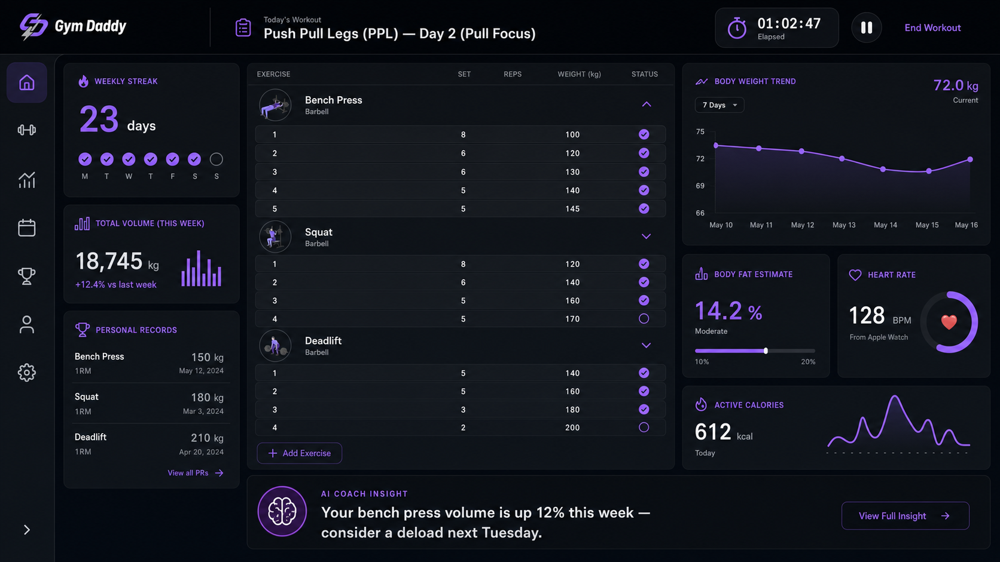

Case Study · Personal Project · 2026
Gym Daddy.
Log a set in three taps.
A workout tracking PWA I built in ninety minutes because every existing option was either too simple, too cluttered, or locked behind a subscription. Installs to your home screen like a native app. Works offline. Data stays on your device.
Live demo
Try it right here.
This is the actual production app running inside a phone frame. Tap around. Start a workout. Log a set. Everything works — it uses localStorage so your data stays in your browser sandbox and won't touch mine.
The embedded demo is optimized for desktop. On mobile, launch the real app for the best experience.
Open Gym DaddyThe problem
Every gym app is either too much or too little.
I've been lifting seriously for years. My phone is where I track sets between rests — a rest is 60 to 90 seconds. If I can't log a set in three taps, the app is broken.
What's on the market:
- Strong, Hevy, FitNotes — good, but they gate templates, history, or Apple Watch behind subscriptions. Pay to log your own workouts? Weird.
- Apple Fitness / Notes / Sheets — free, but fifteen taps to get a rep count in.
- Trainerize, TrainHeroic — full trainer-suite platforms. Way too much for a solo lifter, and clunky when you're the person actually doing the workout.
I wanted something that opened in half a second, remembered what I did last time, and let me tap-tap-tap through a set without losing my rhythm. So I built it.
The process
Ninety minutes from empty repo to installed on my phone.
This was an intentional constraint. Not "how good can I make a workout app in a week." How functional can I make one in the time it takes to watch a movie.
Scaffolding
Vite + React + TypeScript. Tailwind stripped out for hand-written CSS — small enough app that a design system was overhead I didn't need. Set the base color palette (deep space navy, electric purple, cyan) so it wouldn't feel like generic AI slop.
Data model
An Exercise, a Workout, and a Set. Persisted to localStorage via a tiny store hook using useSyncExternalStore. Seeded twenty common exercises so day-one usage doesn't require setup.
Core flow
Four screens: Home dashboard, Start Workout, Active Session, Complete. Every screen designed around the "three taps to log a set" test. Started the session UI with a big weight/reps stepper and a chunky "Log Set" button — no keyboards, no dropdowns.
Add Exercise drawer + history
Bottom-sheet drawer for adding exercises mid-workout — same interaction pattern as iOS share sheets, so it feels native. History view shows recent workouts with total volume.
PWA manifest + service worker
Icons at every iOS-required size, standalone display mode, offline-first service worker. Added to home screen from Safari and it launches like a native app — no browser chrome.
Shipped
Pushed to GitHub, enabled Pages, wired up a Vite deploy workflow. Live at cgdaniels23.github.io/gym-daddy — installed on my phone before I finished my next set.
Tech decisions
Every choice was picked for speed of shipping.
- Vite over Next.js
- No routing, no SSR, no API layer needed. Vite gives me a fast dev server and a static bundle. That's it. Next.js would have been over-engineering.
- localStorage over IndexedDB or a backend
- Zero backend means zero cost, zero auth, zero data-handling liability. Workouts are user-scoped anyway — no need for a server to see them. Trade-off: no sync between devices. Fine for v1.
- PWA over React Native or Swift
- App Store review is a two-week detour for a personal tool. PWA installs to the home screen in one tap and runs anywhere. No developer account required.
- useSyncExternalStore over Redux / Zustand
- The whole store is thirty lines of code. Bringing in state management would be more infrastructure than app.
- GitHub Pages over Vercel / Netlify
- Free static hosting with a workflow that auto-deploys on push. The repo itself is the deploy pipeline.
Screens
The app end-to-end.

What's next
Trainer/trainee mode.
The next version turns Gym Daddy into a two-sided app: a trainer builds weekly program templates and assigns them to clients. A trainee logs their sets against those targets in real time. The trainer can watch each set land as it happens.
Planned stack additions:
- Supabase for auth, program templates, and realtime set streaming
- Magic-link login plus Sign in with Apple
- Weekly repeating program templates the trainer builds once and assigns to many clients
- Realtime "trainer watches sets land" via Supabase Realtime channels
Same three-tap discipline. Same PWA install. Just multi-user.
Want something similar built for your problem?
I take on a small number of consulting engagements at a time — AI systems, revenue intelligence builds, full-stack apps. If you've got something worth shipping in ninety minutes (or ninety days), let's talk.